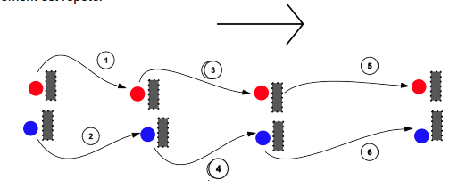
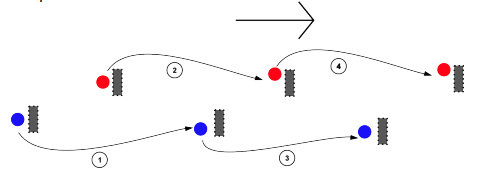

Tiroir et perroquet (Bounding)¶
Le tiroir et le perroquet sont deux techniques de couverture et d’appui mutuel au sein d’une formation.
Le tiroir et le perroquet résultent d’une limitation de l’infanterie : le mouvement réduit (ou supprime) la capacité de l’unité à s’auto-protéger, ou à porter appui à ses alliés.
La formation se divise donc en deux unités ou plus. Lorsque l’une progresse, l’autre couvre ou appuie (et vis-versa).
Celles-ci peuvent être appliquées par n’importe quelle unité au combat, de l’équipe à la division (voir plus haut).
En anglais, la technique du tiroir s’appelle bounding overwatch.
Quand l’utiliser¶
Lorsque l’unité fait face à une zone de danger (par exemple clairière) qu’elle ne peut pas contourner,
Lorsque la position de l’ennemi est inconnue,
Dans le cas d’une rupture du contact (le mouvement est alors retrograde ou latéral - Australian peel),
Lorsque l’unité en a le temps.
Règles d’or¶
Les éléments communiquent tout changement de statut, c’est-à-dire « EN MOUVEMENT » ou « EN PLACE », en général par radio,
L’élément qui s’apprête à bouger attend impérativement que l’élément d’appui s’annonce « EN PLACE »,
L’élément d’appui ne s’annonce pas en place avant que toutes les armes soient mises en position de tir,
L’élément en mouvement doit rester dans le champ visuel de l’élément en appui. Les bonds doivent donc être suffisamment courts pour ne pas perdre l’appui/la couverture,
Les bonds doivent être dimensionnés en fonction de l’endurance des soldats. Le bond se faisant en courant, une trop grande distance à couvrir risque de réduire la mobilité, puis la capacité à fournir un appui.
Tiroir¶
Appelé « successive bounds » en anglais. Plus facile à contrôler et à mettre en place, mais plus lent.
L’équipe 1 progresse sous l’appui / la couverture de l’équipe 2,
L’équipe 1 prend une position d’appui, met en place son dispositif et s’annonce « EN PLACE »,
L’équipe 2 s’annonce « EN MOUVEMENT » et rejoint la position de l’équipe 1, ou une position à sa hauteur,
L’équipe 2 met en place son dispositif et s’annonce « EN PLACE »,
l’équipe 1 s’annonce « EN MOUVEMENT ». Le dispositif est répété autant de fois que nécessaire.

Perroquet¶
Appelé « alternate bounds » en anglais. Progression plus rapide, mais plus difficile à contrôler.
Identique au tiroir, mais dans ce dispositif, l’équipe 2 dépasse la position de l’équipe 1 pour se positioner plus loin.
